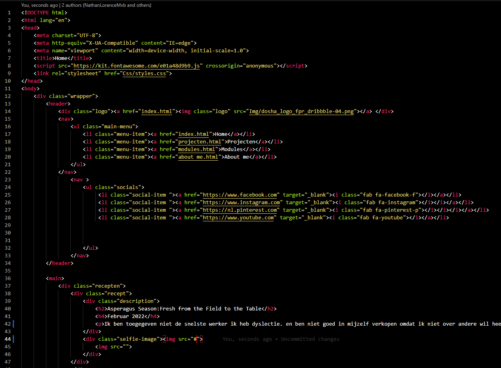

Website challenge blok 2
Februar 2022
Ik ben toegegeven niet de snelste werker ik heb dyslectie. en ben niet goed in mijzelf verkopen omdat ik niet over andere wil heen stappen om te krijgen wat ik wil. Ik vind eerlijkheid en doorzichtig zijn voor je werkgever ook extreem essienseel. op deze website staan dingen over mij en hoe ik denk. Ook staat er wat ik denk van coderen. Ik heb veel tijd aan deze website besteed en veel moeite. Dit is ook de eeeste keer dat ik hulp heb gevraagd omdat ik deze webiste zo goed als mogelijk wou maken. Hopelijk is deze website goed genoeg en heeft het alle dingen die gevraagd zijn.
Hier is de code van deze pagina ik heb de basis van een vorige opdracht gebruikt en gemodifiseerd naar wat ik nodig had.